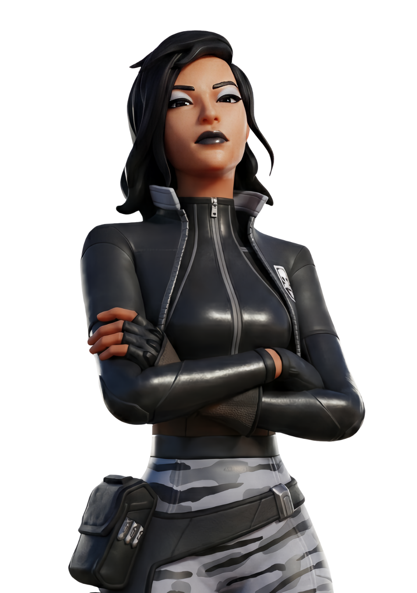
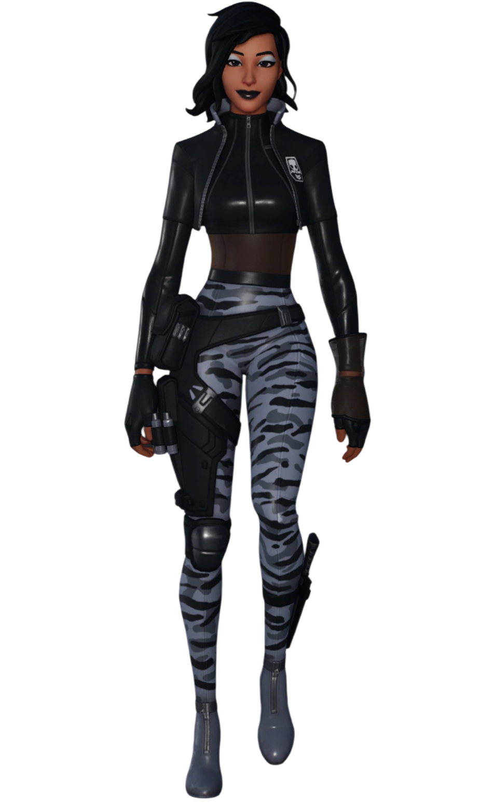

Sorana
// Archives Biographiques
L'Officier du Chaos
Agent tactique d'élite et figure d'autorité de la Faction Chaos, Sorana opère avec une froide détermination pour le compte de l'Institut Onirique et de son maître, Géno. Déployée sur Astéria pour orchestrer l'invasion de l'île, elle supervise la construction de la base centrale d'une poigne de fer et ordonne à son subordonné, Fusion, de calibrer la faille dimensionnelle. Cependant, son assurance impitoyable vole en éclats lorsque la machine se dérègle sous l'influence du temple. Paniquée au milieu de ses installations en ruines, elle secoue son technicien à terre pour tenter de comprendre la situation. Son commandement s'achève brutalement lorsque l'Exécutrice Cubique surgit de la faille corrompue et la réduit instantanément en cendres d'un éclair de foudre noire, balayant ainsi d'un revers de main la menace de l'Institut.
// Variantes Visuelles
